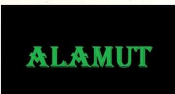

B e l k i de en b ü y ü k savaşları k e n d i i ç i m i z d e yaşıyor u z , a r z u l a r ı m ı z k o r k u l a r ı m ı z l a çarpışıyor, ö z l e m l e r i m i z k u ş k u l a r ı m ı z l a v u r u ş u y o r , h a y a l l e r i m i z acı tecrüb e l e r i m i z i n b i z e k u r d u ğ u pusulara düşüyor, m u t l u l u ğ a d o ğ r u coşkulu b i r k o ş u t u t t u r m a isteği e n o l m a d ı k anda kaçıp gidecek h u z u r u n i h a n e t i n d e n endişeleniyor.
Ö z g ü r l ü ğ e k e n d i m i z i b i r boşluğa b ı r a k ı r gibi b ı r a k m a dürtüsü, b i z i m ö z g ü r l ü ğ ü m ü z ü n b i r başkasının esaretine y o l açacağı t e d i r g i n l i ğ i y l e b ı ç a k l a n ı y o r , başkasın ı n esaretiyle k u ş a t ı l m ı ş k e n b i z ö z g ü r o l a b i l i r m i y i z sorusu b ü y ü y o r i ç i m i z d e .
G e ç m i ş e o l a n b o r c u m u z geleceği y a r a t m a g ü c ü m ü z ü z a y ı f l a t ı y o r .
A l ı ş k a n l ı k l a r ı m ı z h e y e c a n l a r ı m ı z l a b o ğ u ş u y o r .
K e n d i k e n d i m i z l e savaşıp c e v a p l a n n ı b i l m e d i ğ i m i z sorularla allak b u l l a k o l u y o r u z .
B i z i m i s t e k l e r i m i z başkalarına acı verecekse, istekl e r i m i z d e n vaz m ı g e ç m e l i y i z , v a z g e ç m e n i n b i z e çektireceği acı, sevdiğimiz b i r i n i n çekeceği acıdan daha mı az yaralar bizi?
S e v d i k l e r i m i z e o l a n b o r c u m u z ne, p e k i k e n d i m i z e o l a n b o r c u m u z ?
Bu h a y a t ı nasıl yaşamalıyız?
H u z u r u m u a r a m a l ı y ı z , heyecanı mı?
132
Y a p t ı k l a r ı m ı z d a n m ı p i ş m a n o l u r u z , yoksa y a p m a d ı k l a r ı m ı z d a n m ı , gelecekte hangisi t a k ı l ı r aklımıza?
B i z i m m u t l u l u ğ u m u z u n y o l u b i r başkasının m u t suzluğundan geçiyorsa, değiştirmeli m i y i z y o l u m u z u ?
İnsan en b ü y ü k savaşı b e l k i de k e n d i içinde veriyor.
B i r b i r i y l e çelişen d u y g u l a r ı m ı z l a h ı r p a l a n ı y o r u z , k i m s e n i n g ö r m e d i ğ i b i r savaş alanı gibi i ç i m i z k e n d i ö l ü l e r i m i z l e d o l u y o r , d u y g u l a r ı m ı z d a n hangisi galip gelirse gelsin, p a t l a y a n d u y g u l a r ı m ı z l a b i r i l e r i n i n vurulacağını b i l i y o r u z artık.
İ s t e k l e r i m i z i , c o ş k u l a r ı m ı z ı , ö z l e m l e r i m i z i evcilleşt i r m e k m i y i z , k e n d i k e n d i m i z i n avcısı o l u p kafeslere m i k a p a t m a l ı y ı z r u h u m u z u ?
B i l i n m e y e n i n b i z d e yarattığı o çıldırtıcı m e r a k ı n peşinden m i k o ş m a l ı y ı z , yoksa b i l i n m e y e n d e saklı olan a d u y d u ğ u m u z k o r k u y l a geri m i d u r m a l ı y ı z ?
N e y a p m a l ı y ı z , b u h a y a t ı nasıl yaşamalıyız?
K e n d i m i z d e n başka bir d o s t u m u z u n , k e n d i m i z d e n başka b i r o r d u m u z u n , k e n d i m i z d e n başka b i r düşmanım ı z ı n o l m a d ı ğ ı b i r savaşta, b ö l ü n e n r u h u m u z u n hangi t a r a f ı n ı n zaferi için uğraşmalıyız?
H a n g i tarafı tutarsak t u t a l ı m neticede gene de b i r t a r a f ı m ı z a ihanet etmiş o l m a y a c a k m ı y ı z , ihanetsiz yar a t ı l a m a y a c a k b i r geleceğin y ü k ü n ü taşıyabilecek k a d a r güçlü m ü y ü z ?
Kaçsak, gidecek y e r i m i z y o k , k e n d i k e n d i m i z e t u t sağız, savaşsak v u r a c a ğ ı m ı z , başkalarıyla b i r l i k t e gene k e n d i m i z olacağız.
A y a k l a n m ı ş d u y g u l a r ı m ı z ı n b i r b i r i y l e v u r u ş t u ğ u b i r savaş y a ş ı y o r u z .
G e ç m i ş t e n geleceğe ancak savaşla geçebiliyor r u h u m u z , geçmişi o l a n ı n geleceği savaşsız y a r a t ı l m ı y o r .
H e m m u t l u h e m h u z u r l u , h e m coşkulu h e m k o r kusuz, h e m a r z u l u h e m kuşkusuz o l a m a z m ı y ı z , gelece-133
ği başkalarının h a y a t l a r ı n a d o k u n m a d a n , onlarda açılacak yaralarla y a r a l a n m a d a n y a r a t a m a z mıyız?
N e d i r b u savaşın a r d ı n d a k i sır, hangi b ü y ü b i z i b i z i m l e v u r u ş t u r u y o r , h a n g i k o r k u n ç k a d e r geçmişimizi geleceğimizle çarpıştırıyor?
H u z u r , b ü t ü n d u y g u l a r ı m ı z ı barış içinde t u t m a k s a eğer, hiç m i h u z u r l u olamayacağız, b i r huzursuzluğa m ı m a h k û m u z ?
E n k o r k u n ç savaşı k e n d i i ç i m i z d e yaşarken, n e y a p malıyız?
K i m akıl verebilir bize?
K i m b i z e y o l gösterebilir?
Savaşa savaşa, her savaşta b i r p a r ç a m ı z ı ö l d ü r e r e k mi y ü r ü y e c e ğ i z h a y a t ı n içinde? ı H e r m u t l u l u k b i r acıdan m ı süzülecek?
Pusularla, ihanetlerle, saldırılarla, geri çekilmelerle, m ü t a r e k e l e r l e , kaçışlarla, esaretlerle d o l u b i r savaşı yaln ı z b a ş ı m ı z a yaşıyoruz, k i m galip gelirse gelsin b i r taraf ı m ı z h e p y e n i l i y o r .
Y e n i l m e d e n galip g e l e m i y o r u z .
H e r zafer b i r y e n i l g i n i n i z i n i b ı r a k ı y o r d e r i n i m i z de.
Z a f e r l e r i m i z kadar da y e n i l g i l e r i m i z o l u y o r .
K e n d i k e n d i m i z l e savaşarak y ü r ü y o r u z .
V e savaş, b i z b i t t i ğ i m i z d e b i t i y o r ancak.
134
IKI SESIMIZ OLMALı
İki sesimiz olmalı şimdi.
Biri aşka açılmalı, biri dövüşe.
Biri uzaklardan bir kadını çağırır gibi, değmediğin bir tenin ısısını değmeden hisseder gibi usul olmalı, özlemle kısılmak, umutla fısıldamak.
Anlatmalı.
Hayata ve aşka dair konuşmalı, hem şaşkın çocuk gözleri gibi saf olmalı hem yosma akşamlar gibi edepsizliklere doğru kararmalı.
Öyle bir ses olmalı ki, duyan yaşamak ve sevişmek için titremeli.
İki ses gerek bize şimdi.
Biri bir gece baskınında ovulu uyandırır gibi, çıplak kılıçların üstüne çırılçıplak yürür gibi gür olmalı, yiğit
çe yükselmeli, öfkeyle tütmeli.
Haykırmak.
Ölüme ve kavgaya dair konuşmalı.
"Hayır" diye dikilmeli, "despotlara karşıyım, do
ğarken de karşıydım ölürken de karşı olacağım, tanklarınızı ve toplarınızı istemiyorum, darbelerinize baş eğmeyeceğim, siz korkuttukça korkumu daha derinlere gömeceğim."
Üniformalarıyla ya da cüppeleriyle gelip silahlarını gösterdiklerinde, öyle bir ses olmalı ki, gülümsemeli, 135
bir sırtlan sürüsü g ö r d ü ğ ü n d e g ü l ü m s e y e n b i r aslan gibi gülümsemeli.
Ö y l e bir ses o l m a l ı k i k ü k r e m e l i .
Baş k a l d ı r m a l ı .
"Eğilin" diyenlere, "esas siz eğilin" d i y e cevap verm e l i .
H e p b i r sabaha karşı, alacakaranlığın i ç i n d e n iri gölgeleriyle gelenleri, gene g e l m e k istediklerinde ö y l e bir ses o l m a l ı k i , içinden ç ı k t ı k l a r ı karanlığa geri gönd e r m e l i . Ö y l e b i r ses o l m a l ı k i , k o r k a n l a r ı , ç o c u ğ u n u okşar gibi okşayıp " k o r k m a " demeli.
M a l r a u x ' n u n o m u h t e ş e m pasajını o k u m a l ı .
Ç a n K a y Ş e k ' i n o r d u l a r ı y a k a l a d ı k l a r ı solcuları, b ü t ü n insafsızlıklarıyla l o k o m o t i f k a z a n l a r ı n a d i r i d i r i atar a k y a k a r k e n , y a n ı n d a k i arkadaşına, cebinden ç ı k a r t t ı ğ ı siyanür h a p ı n ı u z a t ı p "sen b u n u y u t , sen d a y a n a m a z s ı n "
d i y e n d e l i k a n l ı y ı a n l a t m a l ı .
" Y a n m a k t a n s a k o r k u n u z , b e n size c e b i m d e k i siyan ü r h a p ı n ı v e r i r i m " d e m e l i .
G ü ç karşısında eğilip b ü k ü l e n , yalanlar söyleyen, y a l t a k l a n a n b ü t ü n o a l ç a k l a r ı n inadına, ö y l e b i r ses olm a l ı k i , " o l m a z " d i y e y ü k s e l m e l i .
H e p b i r l i k t e " o l m a z " derseniz, gerçekten d e o l m a z , bir ses b u n u söylemeli.
Ö y l e b i r ses o l m a l ı k i , k o r k a n l a r , n e z a m a n ellerini bir k a d ı n bacağına uzatsalar, "sen bir k o r k a k s ı n " d i y e n o sesi d u y m a l ı .
Ö y l e b i r ses o l m a l ı k i , k o r k u y l a ç e k i l e n , susan kadınlar, ne z a m a n d u d a k l a r ı n a b i r e r k e k dudağı uzansa,
"sen e r k e ğ i n i ve ç o c u ğ u n u n geleceğini sattın" d i y e n o sesle i r k i l m e l i .
Ş i m d i b i z e i k i ses gerekli.
B i r i , y ı l d a b i r k e z açan b i r k a r çiçeği gibi her gece a y n ı heyecanla a ç m a l ı , d e r i n b i r yara gibi s o y u n m a k , rüzgârda k ı r ı l a n b i r m u m alevi gibi k ı r ı l m a l ı .
136
Biri, kale kapıları gibi k a p a n m a l ı , en ağır z ı r h l a r ı n ı k u ş a n m a k , fırtınalarda bile sarsılmamalı.
B i z i m i k i sesimiz o l m a l ı .
Biri aşka açılmalı, b i r i dövüşe.
B i r i sere serpe bir sevişmeye çağırmak, b i r i b ö r k ü -
n ü n k e n a r ı k ü r k l ü bir savaşçı gibi bir savaş çığlığı a t m a lı. Kendisine k a z d ı r ı l a n m e z a r ı n ı n başında k u r ş u n a dizilen L o r c a ' y l a o n u k u r ş u n a d i z d i r e n G e n e r a l F r a n c o arasında y a p m a k z o r u n d a kalacağımız bir seçimde, k i m i se
çeceğimizi soran bir ses o l m a l ı b i r i .
Beatrice'nin güzelliğini a n l a t m a k için D a n t e ' d e n ö d ü n ç alınan b i r ses o l m a l ı diğeri.
H a y a t a v e dövüşe a ç m a l ı y ı z k a p ı l a r ı m ı z ı .
G e l i y o r l a r ç ü n k ü .
K a p ı l a r ı m ı z ı k a p a m a y a geliyorlar.
K e n d i h a y a t ı m ı z ı b i z e z i n d a n y a p m a y a geliyorlar.
M e k k â r e l e r i , m e h t e r l e r i , d a l k a v u k l a r ı y l a geliyorlar.
Sizi e z m e k , sizi bir k o k a k , b i r kalleş, bir sefil, b i r satılmış, b i r alçak y a p m a k için geliyorlar.
K i r l i b i r k u m gibi a k ı p gidecek geleceğiniz elinizden.
Seviştiğinizde, ezilmiş ü z ü m salkımları gibi sevişeceksiniz, sokaklara ç ı k t ı ğ ı n ı z d a , lekeli çarşaflar gibi dolaşacaksınız.
Size L o r c a ' y ı b i r daha öldürtecekler, N a z ı m ' ı b i r daha öldürtecekler, A h m e d A r i f i bir daha ö l d ü r t e c e k ler.
C e l l a t y a m a k l a r ı gibi k o p a r ı l m ı ş kelleler taşıyacaksınız ellerinizde.
Bir m e z b a h a gibi k a n k o k a c a k s ı n ı z .
G e l i y o r l a r ç ü n k ü .
İ k i sesimiz o l m a l ı şimdi.
B i r i s ü m b ü l k o k m a k , b i r i çelik gibi ışımak.
B i r i k ı r l a r a açılmalı, b i r i b u r ç l a r a t ı r m a n m a k .
137
B i r i hayatı alabildiğince k u c a k l a m a l ı , b i r i yaşayabilm e k için gerekirse ö l ü m ü göze alabilmeli.
B i r i cilveyle s o k u l m a l ı sevdiğine, istekli b i r t e n gibi sevdayla y a k a m o z l a n m a l ı .
B i r i , gemi direği gibi d i k o l m a l ı , ö f k e y l e y a n m a l ı .
Z o r günlerde b i z i m i k i sesimiz o l m a l ı .
V e z o r günler b u günler.
Sesi çıkması g e r e k e n b i r ç o k insanın sesini k a y b e t t i
ği günler.
K o r k a k l a r ı n , k e n d i k o r k u l a r ı n ı bulaşıcı b i r hastalık gibi y a y m a k istedikleri günler.
A l ç a k l a r ı n , h a y a t ı n k a r a n l ı ğ ı n d a n k e n d i l e r i n e b i r kese altın k a p m a k için k a r a n l ı ğ ı n tellallığını y a p t ı k l a r ı günler.
B i z i m i k i sesimiz o l m a l ı şimdi. B i r i aşka açılmalı, bir dövüşe.
B i r i şefkatle ç a ğ ı r m a k insanları aydınlığa, b i r i karanlığı isteyenlere karşı ç ı k ı p isyanla h a y k ı r m a k . B i r i , G a z a p Ü z ü m l e r i ' n d e k i k a d ı n gibi süt d o l u m e m e l e r i y l e a ç b i r adamı e m z i r m e l i , b i r i , U m u t r o m a n ı n d a k i çılgın c u m h u r i y e t ç i l e r gibi, sokağın başını t u t a n faşistlerin top u n u n üstüne, b i r k a m y o n a b i n i p canlı b i r e l b o m b a s ı gibi b i n d i r m e k .
B i r i h a y a t ı n güzelliğini anlatmalı, b i r i h a y a t ı yaşay a b i l m e k için d ö v ü ş m e k gerektiğini s ö y l e m e l i .
Sevinçlerden hiç v a z g e ç m e m e l i b i r i .
Şarkılarını, şiirlerini söylemeli.
B ü t ü n şairleri, h a y a t ı n o gül k o k u l u d a m a r l a r ı n ı , tek t e k dolaşmak.
Ç i ç e k ç i l e r i n ö n ü n d e d u r u p u z u n u z u n çiçeklere b a k m a l ı .
Sabahın seherinde, v a k t i saçlarından y a k a l a y ı p gün ü d u d a k l a r ı n d a n ö p m e l i .
Ç o c u k l a r ı n başlarını o k ş a m a k , gençlere gülümsem e l i .
138
D o s t l a r ı hatırlamalı.
H i ç vazgeçmemeli.
D i ğ e r i her şeyden vazgeçmeye hazır olmalı.
Ö f k e s i y l e beslemeli k e n d i n i .
H a y a t l a r ı için h a y a t t a n vazgeçenlerin hayatlarını o k u m a l ı . Ç o c u k l a r ı n ı n geleceğinin k e n d i n e emanet edildiğini b i l m e l i .
Silahlara gözlerini d i k i p k i r p i k l e r i n i bile o y n a t m a d a n b a k m a l ı .
L o k o m o t i f k a z a n l a r ı n a a t ı l m a d a n önce dostlara verilecek b i r adet siyanür h a p ı n ı iç cebinde saklamak.
İsyanın t ü r k ü l e r i n i d o l a ş t ı r m a k dilinde.
B i z i m i k i sesimiz o l m a l ı b u zor günlerde.
Biri sevdiğine "evet" d i y e fısıldamak, b i r i despotlara
"hayır" diye n a r a l a n m a l ı .
Z o r günler bunlar.
K o r k a k l a r ı n sesini k a y b e t t i ğ i günler.
B i z i m i k i sesimiz o l m a l ı .
Biri aşka açılmalı, b i r i dövüşe.
139
DENIZALTı
Ç o c u k k e n , k e n d i m e ait k ü ç ü c ü k b i r d e n i z a l t ı n ı olmasını isterdim, b i n i p derinlere, k a l a b a l ı k l a r d a n u z a k l a ra gidebileceğim, b e n i insanlardan ve h a y a t t a n saklayacak, z ı r h ı y l a b e n i k u c a k l a y ı p k o r u y a c a k b i r denizaltı.
Sonra y a z ı y ı k e ş f e t t i m , y a z ı l a r d a n b i r d e n i z a l t ı y a p ı l a b i leceğini.
N i e t z s c h e , k e n d i denizaltısını d e l i l i k t e n y a p t ı .
K ı r k y a ş ı n d a y k e n , y ü z ü n ü bile g ö r m e d i ğ i y i r m i ya
şındaki b i r genç k ı z a âşık o l d u ğ u n a k a r a r v e r d i . Sonra g ö r d ü o k ı z ı . D e l i l i k aşk k ı l ı ğ ı n d a geldi ona.
Ne y a z ı k k i , âşık o l m a k için seçtiği k ı z , o her gören i n v u r u l d u ğ u A n d r é e L o u Salome, k e n d i bencilliğinden oluşmuş b i r d e n i z a l t ı y l a d o l a ş ı y o r d u insanların arasında. Ç o k z e k i v e ç o k güzeldi. K e n d i k i t a p l a r ı n ı yazm a y a h a z ı r l a n ı y o r d u .
N i e t z s c h e d â h i y d i , Salome z e k i .
Z e k â , dehayı sevmedi.
D â h i , z e k i olana t u t u l d u .
A r a d a k i yaş f a r k ı n a r a ğ m e n , daha çocuk o l a n , daha güçsüz olan, daha şaşkın o l a n ve d e l i r m e y e daha y a k ı n d u r a n dâhiydi.
D a h a y i r m i beş y a ş ı n d a y k e n y a z d ı ğ ı k i t a p l a felsefe dünyasını sarsan, A v r u p a ' n ı n e n b ü y ü k b e y i n l e r i n d e n b i r i , bir gün bir ata "sevgilim" diye sarılıp ağlayarak de-140
razakısına b i n d i ve delilik d e n i z i n i n derinlerine d o ğ r u gitti.
Bir daha geri d ö n m e d i .
K a d ı n l a r a d u y d u ğ u ö f k e y l e yazdığı b i r satır, k a d ı n lara k ı z a n her e r k e ğ i n tekrarladığı b i r slogana dönüştü:
"Bir k a d ı n l a b u l u ş m a y a gidiyorsan, y a n ı n a kırbacın ı a l m a y ı u n u t m a . "
N i e t z s c h e , sevilmediği için öldü.
Edgar A l l a n P o e , sevdiğini k a y b e t t i ğ i için.
Sefalet içinde süren h a y a t l a r ı n a daha fazla dayanam a y a n karısı v e r e m e y a k a l a n ı p gün b e g ü n e r i y e r e k ayrıldı b u d ü n y a d a n .
Poe, y a z ı l a r d a n yaptığı denizaltılarla, d u y d u ğ u acıdan uzaklaşmasına, istediği derine inmesine i m k â n olm a d ı ğ ı n ı d ü ş ü n ü p i ç k i d e n y e n i denizaltılar y a p t ı .
B i r daha d ö n m e m e k için gittiğinde yaşı N i e t z s c h e '
n i n k i n d e n daha fazla değildi.
" M o r g Sokağı C i n a y e t i " k i t a b ı y l a , e d e b i y a t t a k i "bilinç a k ı m ı " n ı n i l k ö r n e ğ i n i v e r m i ş t i , çağrışımlar zincirin i n insan b e y n i n d e nasıl h a l k a h a l k a b i r b i r i n e e k l e n d i
ğini, b u cinayet r o m a n ı n d a anlatmıştı.
Ç a y k o v s k i , n o t a l a r d a n y a p ı l m ı ş b i r d e n i z a l t ı y l a derinlere i n i y o r d u .
B i r k a d ı n l a b i r e r k e k arasına sıkıştı gemisi. K a d ı n , o n a sahip ç ı k a n , destekleyen, v a r l ı k l ı v e güzel b i r k a d ı n dı. Ç a y k o v s k i ise b i r erkeğe âşıktı.
Bir erkeğe d u y d u ğ u aşkı, ne o k a d ı n ne de m ü z i k çevreleri affetti. D a h a sonra m i l y o n l a r c a insanın z e v k l e dinleyeceği son eserlerini sevmediler.
T i f o salgınının k o l gezdiği M o s k o v a ' d a b i r l o k a n t a da, "bir b a r d a k su" istedi o da. Y a n ı n d a o t u r a n kardeşi,
"kapalı şişe su g e t i r i n " dedi. Ç a y k o v s k i , " h a y ı r çeşme suyu i s t i y o r u m " d i y e ısrar e t t i . Ç e ş m e s u y u n u içti.
V e t i f o o l d u .
B i r erkeğe d u y d u ğ u aşk, b i r b a r d a k suyla b i t t i .
141
N o t a l a r l a , b i r b a r d a k sudan oluşan b i r d e n i z a l t ı y d ı o n u n bindiği.
Baudelaire ile V a n G o g h o r o s p u l a r a âşık olmuşlardı, b i r i b i r kulağını kesip, diğeri k o k a i n t o z l a r ı n ı n arasına dalıp b i n d i denizaltısına.
N a p o l y o n ise, yetersiz e r k e k l i ğ i y l e , T a l e y r a n ' ı n esk i metresi o l a n azgın bir k a d ı n a t u t u l m u ş t u , e n b ü y ü k i m p a r a t o r l u k l a r ı n bile m u t l u l u k g e t i r m e d i ğ i n i f a r k etti
ğinde, " A v r u p a ' y ı b i r l e ş t i r m e " h a y a l i n d e n bir denizaltı y a p ı p savaşlarıyla b i n d i denizaltısına.
H e p s i n i n başka başka d e n i z a l t ı l a r ı o l d u .
Ç o c u k k e n , k e n d i m e ait k ü ç ü c ü k b i r denizaltını olmasını i s t e r d i m , b i n i p derinlere, k a l a b a l ı k l a r d a n uzaklara gidebileceğim, b e n i insanlardan ve h a y a t t a n saklayacak, z ı r h ı y l a b e n i k u c a k l a y ı p k o r u y a c a k b i r denizaltı.
D e n i z a l t ı diye b i r yazı y a z ı p b i n d i m b e n d e k e n d i d e n i z a l t ı m a .
142

Ahmet Altan
KARANLIKTA
SABAH
KUŞLARI
Ahmet Altan'm kitaplaşmış denemeleriyle, ilk kez Geceyarısı
Şarkıları adlı yapıtında tanışmıştı okurlarımız. Büyük bir coşkuyla karşılanan, üst üste yeni basımları yapılan bu denemeler, çarpıcılığıyla, insanı derinlemesine irdeleyişi ve kişinin içsel yaşamını, örtüsüz kimliğini su yüzüne çıkarışıyla okuyanları bir anda etkilemiş, şaşırtmış ve elbette düşündürmüştü. Karanlıkta
Sabah Kuşları da aynı tür denemelerden oluşuyor; ancak aşkı ve tutkuları incelemek yanında, toplumsal yaraları, haksızlıkları, çarpıklıkları da öne çıkarıyor. İnsanı, içinde yaşadığı toplumun sorunlarına uzak kalmamaya zorluyor; 'Tanrı ve Berke'de olduğu gibi, içinizi isyanla dolduruyor; 'Portakal Ağacı'nda olduğu gibi yüreğinizi burkuyor; 'Aşk Çıplak Gezer'de olduğu gibi aşkı özletiyor. Bu yazılan kaleme alanın, işini iyi bilen gerçek bir edebiyatçı, insanı iyi tanıyan yaman bir gözlemci olduğunu hemen anlıyorsunuz. Ahmet Altan, toplumdaki acıları, hepimizin içindeki öfkeleri, tutkuları, bizim adımıza sözcüklere döküyor, dile getiriyor. Karşıdan okunmuyor yazdıkları; tarafsız kalınamıyor yazdıklarına; satırların içinden okuyoruz ve paylaşıyoruz duygularını, düşüncelerini. Yazının amacı da bu değil mi zaten?
Kapaktaki resim: JAOOUIM SUN YER